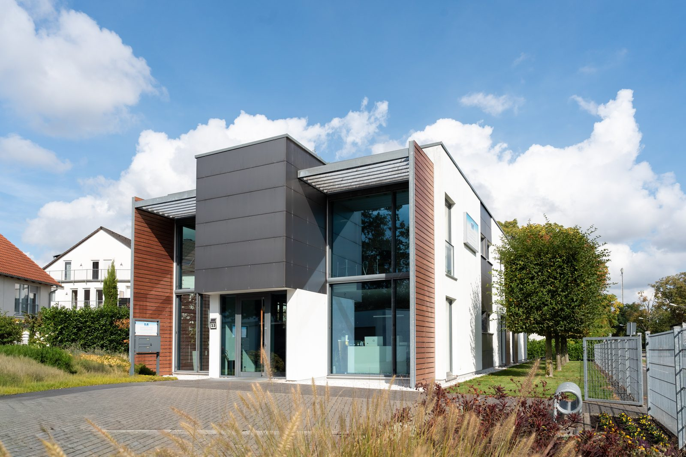
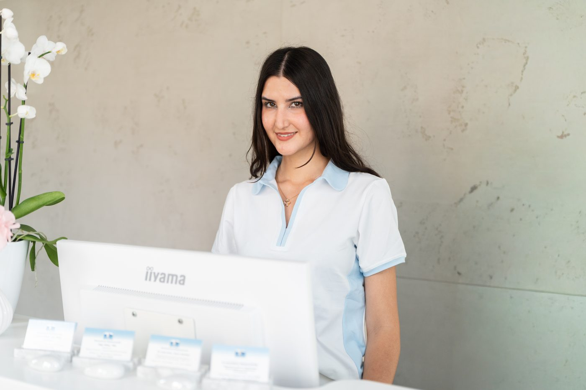

Zahnzentrum Messerschmidt · Mainz-Laubenheim
Kompetenzim Detail.
Moderne Zahnmedizin in einem hellen, eigens gebauten Haus. Für Ihr Lächeln, ein Leben lang.
Willkommen
Zahnmedizin, wie wir sie uns selbst wünschen.
Unser Team um Zahnärztin Dr. Sabine Messerschmidt freut sich, Sie im Zahnzentrum zu begrüßen. Wir verbinden fachliche Kompetenz mit großer Sorgfalt, viel Engagement und einem Lächeln.
Für uns stehen Sie als Mensch im Mittelpunkt. Deshalb nehmen wir uns Zeit für Beratung, erklären jeden Schritt und sorgen für eine angenehme Atmosphäre, vom ersten Milchzahn bis zum hochwertigen Zahnersatz.
Unser Team kennenlernenBei uns steckt die Kompetenz im Detail. Kleine Teile ergeben das große Ganze: moderne Technik, erfahrene Zahnärztinnen und ein Team, das Sie mit einem Lächeln empfängt.
Leistungen
Alles für gesunde und schöne Zähne.
Von der Vorsorge über Implantate bis zur Kinderzahnheilkunde. Unsere Zahnärztinnen bilden sich laufend fort, damit Sie von modernen Methoden profitieren.
Prophylaxe & PZR
Vorsorge, damit Ihre Zähne ein Leben lang gesund bleiben.
Mehr erfahrenÄsthetik
Bleaching, Veneers und natürliche Restaurationen für ein schönes Lächeln.
Mehr erfahrenParodontologie
Früh erkennen und gezielt behandeln, damit Ihre Zähne fest bleiben.
Mehr erfahrenZahnersatz & Implantate
Füllungen, Kronen, Brücken und Implantate aus dem eigenen Labor.
Mehr erfahrenEndodontie
Wurzelbehandlung und Wurzelspitzenresektion, damit Ihr eigener Zahn bleibt.
Mehr erfahrenKinderzahnheilkunde
Mit Geduld und Humor: der entspannte Zahnarztbesuch für Kinder.
Mehr erfahrenFunktionsdiagnostik
Wenn Kiefer, Kopf oder Nacken schmerzen: Ursachen gezielt finden.
Mehr erfahrenAngstpatienten
Wir nehmen Ihre Sorgen ernst und nehmen uns Zeit für Sie.
Mehr erfahrenOralchirurgie
Von der Weisheitszahn-OP bis zum Kieferaufbau, ausführlich erklärt.
Mehr erfahren
Unsere Praxis
Ein Haus, gebaut für Ihr Wohlbefinden.
Unsere Praxis liegt in einem eigens dafür errichteten Niedrigenergiehaus. Große Fenster, helle Räume und eine eigene Solaranlage: Nachhaltigkeit ist uns wichtig, bei den Räumen genauso wie bei der Behandlung.
Die Praxis entdeckenAngst vor dem Zahnarzt?
Bei uns dürfen Sie entspannt sein.
Sprechen Sie Ihre Sorgen schon bei der Terminvereinbarung an. Wir planen mehr Zeit ein, erklären jeden Schritt und sorgen für eine ruhige Atmosphäre. Auf Wunsch bieten wir begleitend Akupunktur an.
Mehr für Angstpatienten
Anfahrt
Parkstraße 33
55130 Mainz-Laubenheim
Einfahrt über die Hans-Zöller-Straße 114, Parkplätze direkt am Haus.
Sprechzeiten
Montag bis Donnerstag
8:00 bis 20:00 Uhr durchgehend
Freitag 8:00 bis 16:00 Uhr
Termine nach Vereinbarung
Kontakt
06131 86926
info@zahnzentrum-messerschmidt.de
Notdienst außerhalb der Sprechzeiten:
06131 6246-999